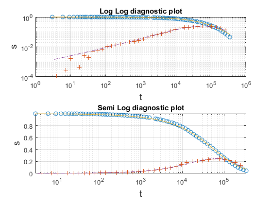
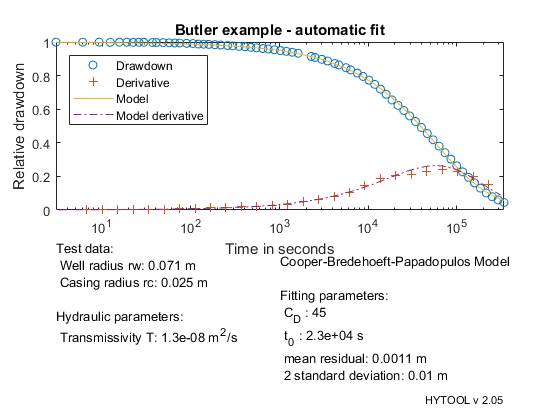

Interpretation of a slug test
This demonstrates the interpretation of a slug test with the Cooper et al. (1967) solution
Copyright 1998-2007 - Ph. Renard & Co. - GNU GENERAL PUBLIC LICENSE
Contents
Load the data
The data set for this example comes from: Butler James, 1998, The design, performance and analysis of slug tests. Lewis Publisher. Data set from table 5.2 pp. 61-62. Localisation: Test performed in a monitoring well in Lincoln County, Kansas Geology : The well was screened in a deltaic sequence consisting of mudstone interbedded with very fine sandstone
Let us first load the data
[t,s]=ldf('csl_ds1.dat');
Interpretation
Once the data have been loaded and the parameter defined, we can interpret the data. As usual, we can use the guess function to obtain a first estimates of the parameter and check the quality of the first guess with the trial function.
Note that the trial function can be used to adjust manually the parameters if required.
p=csl_gss(t,s);
trial('csl',p,t,s)
 We then apply the non linear fit and create the report. We find the folowing values for the transmissivity:
T = 1.3 e-8 m2/s Cd = 45 for the wellbore storage coefficient
p=fit('csl',p,t,s); rw=0.071; % Radius of the well in m rc=0.025; % Radius of the casing in m csl_pre(rw,rc); csl_rpt(p,t,s,'Butler example - automatic fit')
Norm of Norm of
Iteration SSE Gradient Step
-----------------------------------------------------------
0 0.00748307
1 0.00415603 0.00118971 3261.17
2 0.00271204 0.000352819 740.016
3 0.00234342 0.000103171 228.352
4 0.00215481 5.27217e-05 304.757
5 0.00194699 7.69686e-05 485.11
6 0.00187145 4.45939e-05 283.004
7 0.00182692 5.03067e-05 256.715
8 0.00181638 2.13386e-05 227.499
9 0.00181638 9.74909e-06 0.00578613
10 0.00181638 2.65543e-05 2.13093e-14
Iterations terminated: relative norm of the current step is less than OPTIONS.TolX
 The results compares well with the values found by Cooper et al. (1967) with type-curve matching: alpha = 0.0125 corresponding to a value of Cd=40 T = 1.23 e-8 m2/s